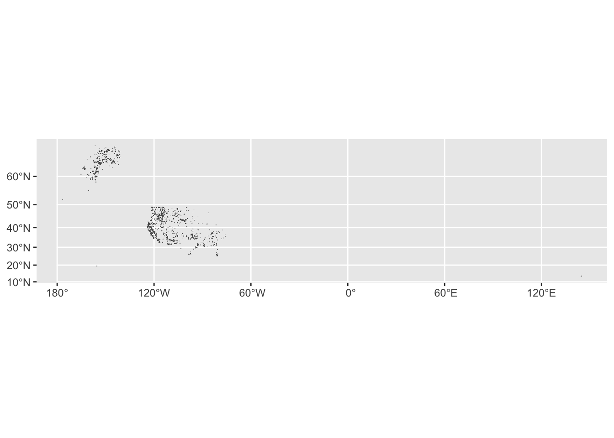

Reading layer `LandMark_IPLC_poly_public_v202509' from data source
`/Users/nikolefiden/Desktop/DATA-510/Indigenous_comm_lands_v202509/LandMark_IPLC_poly_public_v202509.shp'
using driver `ESRI Shapefile'
Simple feature collection with 124616 features and 26 fields
Geometry type: MULTIPOLYGON
Dimension: XY, XYZ
Bounding box: xmin: -19936490 ymin: -7041268 xmax: 19974720 ymax: 18422210
z_range: zmin: 0 zmax: 333.9655
Projected CRS: WGS 84 / Pseudo-Mercator
shp =st_zm(shp) # removing z-coordinate as it is not needed for our purposesclass(shp)
[1] "sf" "data.frame"
head(shp)
Simple feature collection with 6 features and 26 fields
Geometry type: MULTIPOLYGON
Dimension: XY
Bounding box: xmin: 14360270 ymin: -2730689 xmax: 15089150 ymax: -1217191
Projected CRS: WGS 84 / Pseudo-Mercator
identity name form_rec
1 Indigenous Croker Island Acknowledged by govt
2 Indigenous Alice Springs Acknowledged by govt
3 Indigenous St Vidgeon'S (Roper River) Acknowledged by govt
4 Indigenous Urapunga Township Acknowledged by govt
5 Indigenous Miriuwung-Gajerrong (Northern Territory) Acknowledged by govt
6 Indigenous Davenport/Murchison Acknowledged by govt
doc_status stat_date stat_note country
1 Documented 1998/09/04 In effect - Finalised Australia
2 Documented 2000/05/23 In effect - Finalised Australia
3 Documented 2000/11/14 In effect - Finalised Australia
4 Documented 2002/02/07 In effect - Finalised Australia
5 Documented 2003/12/09 In effect - Finalised Australia
6 Documented 2004/04/23 In effect - Finalised Australia
category
1 Native Title (Non-Exclusive)
2 Native Title (Non-Exclusive)
3 Native Title (Non-Exclusive)
4 Native Title (Exclusive)
5 Native Title (Non-Exclusive)
6 Native Title (Exclusive)
ethncty_1
1 Yuwurruma members of the Mandilarri-Ildugij, Mangalara, Murran, Gadura-Minaga, and Ngaynjaharr clans
2 Mbantuarinya/ Arrernte People
3 Wandarang, Alawa, Marra and Ngalakan Peoples
4 The Ngalakan People
5 Damberal, Bindjen and Nyawamnyawam estate groups
6 Aboriginal persons who are members of one or more of the seven landholding groups; Arrawatyen, Antarrengeny, Akweranty/Anwerret, Lyentyawal Ileparranem, Tyaw, Warwepenty and Kelantyerrang
populatn pop_source pop_year area_ofcl area_gis scale method
1 0 <NA> 0 293469.4 293432.54524 <NA> <NA>
2 0 <NA> 0 13491.7 13491.65897 <NA> <NA>
3 0 <NA> 0 642724.4 642724.41713 <NA> <NA>
4 0 <NA> 0 47.4 47.44239 <NA> <NA>
5 0 <NA> 0 59182.6 59182.53913 <NA> <NA>
6 0 <NA> 0 26.9 26.91867 <NA> <NA>
data_ctrb data_src data_src_s
1 Publicly available National Native Title Tribunal NNTT
2 Publicly available National Native Title Tribunal NNTT
3 Publicly available National Native Title Tribunal NNTT
4 Publicly available National Native Title Tribunal NNTT
5 Publicly available National Native Title Tribunal NNTT
6 Publicly available National Native Title Tribunal NNTT
data_src_l data_date add_note
1 National Native Title Tribunal 2024/01/05 <NA>
2 National Native Title Tribunal 2024/01/05 <NA>
3 National Native Title Tribunal 2024/01/05 <NA>
4 National Native Title Tribunal 2024/01/05 <NA>
5 National Native Title Tribunal 2024/01/05 <NA>
6 National Native Title Tribunal 2024/01/05 <NA>
more_info
1 https://www.judgments.fedcourt.gov.au/judgments/Judgments/fca/single/1998/1998fca1185
2 http://www.austlii.edu.au/au/cases/cth/FCA/2000/671.html
3 http://www.austlii.edu.au/au/cases/cth/FCA/2000/923.html
4 http://www.nntt.gov.au/
5 http://www.austlii.edu.au/au/cases/cth/FCAFC/2003/283.html
6 http://www.austlii.edu.au/au/cases/cth/FCA/2004/472.html
layer download iso_code geometry
1 Indigenous Lands Yes AUS MULTIPOLYGON (((14797122 -1...
2 Indigenous Lands Yes AUS MULTIPOLYGON (((14889785 -2...
3 Indigenous Lands Yes AUS MULTIPOLYGON (((15011750 -1...
4 Indigenous Lands Yes AUS MULTIPOLYGON (((14973594 -1...
5 Indigenous Lands Yes AUS MULTIPOLYGON (((14365622 -1...
6 Indigenous Lands Yes AUS MULTIPOLYGON (((15048008 -2...
#st_geometry(shp[1, ])[[1]][[1]] # can run but output is very longplot(st_geometry(shp[1, ]))
All looks good, example shape plots appropriately.
# checking dtype for each col for docsstr(shp)
Classes 'sf' and 'data.frame': 124616 obs. of 27 variables:
$ identity : chr "Indigenous" "Indigenous" "Indigenous" "Indigenous" ...
$ name : chr "Croker Island" "Alice Springs" "St Vidgeon'S (Roper River)" "Urapunga Township" ...
$ form_rec : chr "Acknowledged by govt" "Acknowledged by govt" "Acknowledged by govt" "Acknowledged by govt" ...
$ doc_status: chr "Documented" "Documented" "Documented" "Documented" ...
$ stat_date : chr "1998/09/04" "2000/05/23" "2000/11/14" "2002/02/07" ...
$ stat_note : chr "In effect - Finalised" "In effect - Finalised" "In effect - Finalised" "In effect - Finalised" ...
$ country : chr "Australia" "Australia" "Australia" "Australia" ...
$ category : chr "Native Title (Non-Exclusive)" "Native Title (Non-Exclusive)" "Native Title (Non-Exclusive)" "Native Title (Exclusive)" ...
$ ethncty_1 : chr "Yuwurruma members of the Mandilarri-Ildugij, Mangalara, Murran, Gadura-Minaga, and Ngaynjaharr clans" "Mbantuarinya/ Arrernte People" "Wandarang, Alawa, Marra and Ngalakan Peoples" "The Ngalakan People" ...
$ populatn : num 0 0 0 0 0 0 0 0 0 0 ...
$ pop_source: chr NA NA NA NA ...
$ pop_year : num 0 0 0 0 0 0 0 0 0 0 ...
$ area_ofcl : num 293469.4 13491.7 642724.4 47.4 59182.6 ...
$ area_gis : num 293432.5 13491.7 642724.4 47.4 59182.5 ...
$ scale : chr NA NA NA NA ...
$ method : chr NA NA NA NA ...
$ data_ctrb : chr "Publicly available" "Publicly available" "Publicly available" "Publicly available" ...
$ data_src : chr "National Native Title Tribunal" "National Native Title Tribunal" "National Native Title Tribunal" "National Native Title Tribunal" ...
$ data_src_s: chr "NNTT" "NNTT" "NNTT" "NNTT" ...
$ data_src_l: chr "National Native Title Tribunal" "National Native Title Tribunal" "National Native Title Tribunal" "National Native Title Tribunal" ...
$ data_date : chr "2024/01/05" "2024/01/05" "2024/01/05" "2024/01/05" ...
$ add_note : chr NA NA NA NA ...
$ more_info : chr "https://www.judgments.fedcourt.gov.au/judgments/Judgments/fca/single/1998/1998fca1185" "http://www.austlii.edu.au/au/cases/cth/FCA/2000/671.html" "http://www.austlii.edu.au/au/cases/cth/FCA/2000/923.html" "http://www.nntt.gov.au/" ...
$ layer : chr "Indigenous Lands" "Indigenous Lands" "Indigenous Lands" "Indigenous Lands" ...
$ download : chr "Yes" "Yes" "Yes" "Yes" ...
$ iso_code : chr "AUS" "AUS" "AUS" "AUS" ...
$ geometry :sfc_MULTIPOLYGON of length 124616; first list element: List of 1
..$ :List of 48
.. ..$ : num [1:282, 1:2] 14797122 14797122 14796999 14796702 14796561 ...
.. ..$ : num [1:13, 1:2] 14775079 14775037 14774694 14774650 14774661 ...
.. ..$ : num [1:48, 1:2] 14781077 14780948 14780858 14780679 14780544 ...
.. ..$ : num [1:8, 1:2] 14781255 14781352 14781437 14781561 14781641 ...
.. ..$ : num [1:27, 1:2] 14775653 14775808 14775725 14775742 14775674 ...
.. ..$ : num [1:68, 1:2] 14770140 14770085 14769742 14769256 14769127 ...
.. ..$ : num [1:638, 1:2] 14758810 14758693 14758662 14758749 14758800 ...
.. ..$ : num [1:9, 1:2] 14750692 14750596 14750548 14750414 14750407 ...
.. ..$ : num [1:5, 1:2] 14750636 14750716 14750728 14750674 14750636 ...
.. ..$ : num [1:5, 1:2] 14748194 14748139 14748145 14748201 14748194 ...
.. ..$ : num [1:5, 1:2] 14759666 14759637 14759612 14759636 14759666 ...
.. ..$ : num [1:24, 1:2] 14745272 14745216 14745169 14745143 14745082 ...
.. ..$ : num [1:9, 1:2] 14786184 14786264 14786398 14786375 14786257 ...
.. ..$ : num [1:33, 1:2] 14785969 14786077 14786038 14786064 14786127 ...
.. ..$ : num [1:8, 1:2] 14785357 14785296 14785277 14785296 14785522 ...
.. ..$ : num [1:100, 1:2] 14786395 14786291 14786188 14785834 14785817 ...
.. ..$ : num [1:5, 1:2] 14785745 14785702 14785627 14785712 14785745 ...
.. ..$ : num [1:86, 1:2] 14796215 14796356 14796344 14796052 14796043 ...
.. ..$ : num [1:6, 1:2] 14796541 14796559 14796510 14796491 14796498 ...
.. ..$ : num [1:5, 1:2] 14796563 14796527 14796520 14796539 14796563 ...
.. ..$ : num [1:5, 1:2] 14796412 14796369 14796362 14796381 14796412 ...
.. ..$ : num [1:6, 1:2] 14789906 14789932 14789955 14789974 14789931 ...
.. ..$ : num [1:19, 1:2] 14791664 14791859 14791921 14792067 14792208 ...
.. ..$ : num [1:33, 1:2] 14789281 14789471 14789673 14789918 14790273 ...
.. ..$ : num [1:6, 1:2] 14791887 14791849 14791814 14791807 14791837 ...
.. ..$ : num [1:6, 1:2] 14792060 14792116 14792158 14792153 14792080 ...
.. ..$ : num [1:7, 1:2] 14792272 14792335 14792298 14792169 14792136 ...
.. ..$ : num [1:6, 1:2] 14793106 14793149 14793179 14793106 14793038 ...
.. ..$ : num [1:6, 1:2] 14792532 14792569 14792588 14792551 14792532 ...
.. ..$ : num [1:5, 1:2] 14792962 14792918 14792913 14792955 14792962 ...
.. ..$ : num [1:5, 1:2] 14786366 14786451 14786453 14786392 14786366 ...
.. ..$ : num [1:6, 1:2] 14786446 14786507 14786533 14786526 14786446 ...
.. ..$ : num [1:6, 1:2] 14786847 14786876 14786957 14786917 14786879 ...
.. ..$ : num [1:12, 1:2] 14796799 14796755 14796779 14796809 14796889 ...
.. ..$ : num [1:4, 1:2] 14797047 14797047 14796991 14797047 -1250786 ...
.. ..$ : num [1:6, 1:2] 14796989 14797032 14797038 14796984 14796965 ...
.. ..$ : num [1:5, 1:2] 14796734 14796777 14796796 14796741 14796734 ...
.. ..$ : num [1:8, 1:2] 14806496 14806374 14806386 14806219 14806172 ...
.. ..$ : num [1:7, 1:2] 14807301 14807294 14807233 14807233 14807184 ...
.. ..$ : num [1:6, 1:2] 14807456 14807425 14807364 14807352 14807376 ...
.. ..$ : num [1:5, 1:2] 14807475 14807444 14807401 14807439 14807475 ...
.. ..$ : num [1:61, 1:2] 14805491 14805088 14804928 14804723 14804308 ...
.. ..$ : num [1:7, 1:2] 14802290 14802229 14802199 14802275 14802307 ...
.. ..$ : num [1:55, 1:2] 14809722 14809802 14810008 14810059 14810132 ...
.. ..$ : num [1:12, 1:2] 14810469 14810479 14810489 14810496 14810489 ...
.. ..$ : num [1:9, 1:2] 14810248 14810243 14810226 14810226 14810233 ...
.. ..$ : num [1:10, 1:2] 14810313 14810309 14810294 14810279 14810279 ...
.. ..$ : num [1:13, 1:2] 14810422 14810433 14810430 14810432 14810427 ...
..- attr(*, "class")= chr [1:3] "XY" "MULTIPOLYGON" "sfg"
- attr(*, "sf_column")= chr "geometry"
- attr(*, "agr")= Factor w/ 3 levels "constant","aggregate",..: NA NA NA NA NA NA NA NA NA NA ...
..- attr(*, "names")= chr [1:26] "identity" "name" "form_rec" "doc_status" ...
Limiting the data to the USA, removing some Alaska Native Allotment, and plotting again (takes a lot longer to run). Looks good, plotted appropriately.
Simple feature collection with 6 features and 26 fields
Geometry type: MULTIPOLYGON
Dimension: XY
Bounding box: xmin: -17790970 ymin: 7978735 xmax: -14918560 ymax: 10060490
Projected CRS: WGS 84 / Pseudo-Mercator
identity name form_rec
1 Indigenous BLM ALIS Case Number - AKA 002493 Acknowledged by govt
2 Indigenous BLM ALIS Case Number - AKA 002493 Acknowledged by govt
3 Indigenous BLM ALIS Case Number - AKA 002493 Acknowledged by govt
4 Indigenous BLM ALIS Case Number - AKA 002876 Acknowledged by govt
5 Indigenous BLM ALIS Case Number - AKFF 018946C Acknowledged by govt
6 Indigenous BLM ALIS Case Number - AKFF 017876 Acknowledged by govt
doc_status stat_date stat_note country
1 Documented <NA> <NA> United States of America
2 Documented <NA> <NA> United States of America
3 Documented <NA> <NA> United States of America
4 Documented <NA> <NA> United States of America
5 Documented <NA> <NA> United States of America
6 Documented <NA> <NA> United States of America
category ethncty_1 populatn pop_source pop_year area_ofcl
1 Alaska Native Allotment <NA> 0 <NA> 0 0
2 Alaska Native Allotment <NA> 0 <NA> 0 0
3 Alaska Native Allotment <NA> 0 <NA> 0 0
4 Alaska Native Allotment <NA> 0 <NA> 0 0
5 Alaska Native Allotment <NA> 0 <NA> 0 0
6 Alaska Native Allotment <NA> 0 <NA> 0 0
area_gis scale method data_ctrb data_src
1 8.1243131 <NA> Survey records Publicly available Bureau of Land Management
2 23.7423496 <NA> Survey records Publicly available Bureau of Land Management
3 14.4080953 <NA> Survey records Publicly available Bureau of Land Management
4 0.7282587 <NA> Survey records Publicly available Bureau of Land Management
5 16.1888918 <NA> Survey records Publicly available Bureau of Land Management
6 64.7360386 <NA> Survey records Publicly available Bureau of Land Management
data_src_s data_src_l data_date add_note
1 BLM Bureau of Land Management (BLM) 2015/08/31 <NA>
2 BLM Bureau of Land Management (BLM) 2015/08/31 <NA>
3 BLM Bureau of Land Management (BLM) 2015/08/31 <NA>
4 BLM Bureau of Land Management (BLM) 2015/08/31 <NA>
5 BLM Bureau of Land Management (BLM) 2015/08/31 <NA>
6 BLM Bureau of Land Management (BLM) 2015/08/31 <NA>
more_info layer download iso_code
1 http://sdms.ak.blm.gov Indigenous Lands Yes USA
2 http://sdms.ak.blm.gov Indigenous Lands Yes USA
3 http://sdms.ak.blm.gov Indigenous Lands Yes USA
4 http://sdms.ak.blm.gov Indigenous Lands Yes USA
5 http://sdms.ak.blm.gov Indigenous Lands Yes USA
6 http://sdms.ak.blm.gov Indigenous Lands Yes USA
geometry
1 MULTIPOLYGON (((-15117378 7...
2 MULTIPOLYGON (((-15116185 7...
3 MULTIPOLYGON (((-15116727 7...
4 MULTIPOLYGON (((-14918648 7...
5 MULTIPOLYGON (((-17790973 1...
6 MULTIPOLYGON (((-16868947 9...
Simple feature collection with 3 features and 26 fields
Geometry type: MULTIPOLYGON
Dimension: XY
Bounding box: xmin: -17659990 ymin: 8180262 xmax: -17611500 ymax: 8277694
Projected CRS: WGS 84 / Pseudo-Mercator
identity name form_rec
1 Indigenous BLM ALIS Case Number - AKAA 006648 O Not acknowledged by govt
2 Indigenous BLM ALIS Case Number - AKAA 006648 P Not acknowledged by govt
3 Indigenous BLM ALIS Case Number - AKAA 006659 A Not acknowledged by govt
doc_status stat_date stat_note
1 Held or used with formal land claim submitted <NA> <NA>
2 Held or used with formal land claim submitted <NA> <NA>
3 Held or used with formal land claim submitted <NA> <NA>
country category ethncty_1 populatn pop_source
1 United States of America ANCSA Selected <NA> 0 <NA>
2 United States of America ANCSA Selected <NA> 0 <NA>
3 United States of America ANCSA Selected <NA> 0 <NA>
pop_year area_ofcl area_gis scale
1 0 0 258.9986 <NA>
2 0 0 3595.7292 <NA>
3 0 0 7456.8273 <NA>
method data_ctrb
1 Generalized to Protracted Section Grid for Alaska Publicly available
2 Generalized to Protracted Section Grid for Alaska Publicly available
3 Generalized to Protracted Section Grid for Alaska Publicly available
data_src data_src_s data_src_l
1 Bureau of Land Management BLM Bureau of Land Management (BLM)
2 Bureau of Land Management BLM Bureau of Land Management (BLM)
3 Bureau of Land Management BLM Bureau of Land Management (BLM)
data_date add_note more_info layer download iso_code
1 2015/08/31 <NA> http://sdms.ak.blm.gov Indigenous Lands Yes USA
2 2015/08/31 <NA> http://sdms.ak.blm.gov Indigenous Lands Yes USA
3 2015/08/31 <NA> http://sdms.ak.blm.gov Indigenous Lands Yes USA
geometry
1 MULTIPOLYGON (((-17611498 8...
2 MULTIPOLYGON (((-17617263 8...
3 MULTIPOLYGON (((-17659977 8...
unique(us_shp$category)
[1] "Alaska Native Allotment"
[2] "ANCSA Selected"
[3] "Metlakatla Indian Reservation"
[4] "ANCSA Conveyance - patented"
[5] "ANCSA Conveyance - interim conveyed"
[6] "ANCSA Conveyance - conveyed other"
[7] "American Indian and Alaska Native Land Area Representation"
[8] "AIAN National LAR Supplemental"
Simple feature collection with 6 features and 26 fields
Geometry type: MULTIPOLYGON
Dimension: XY
Bounding box: xmin: -17689100 ymin: 8180262 xmax: -16586680 ymax: 8707575
Projected CRS: WGS 84 / Pseudo-Mercator
identity name form_rec
1 Indigenous BLM ALIS Case Number - AKAA 006648 O Not acknowledged by govt
2 Indigenous BLM ALIS Case Number - AKAA 006648 P Not acknowledged by govt
3 Indigenous BLM ALIS Case Number - AKAA 006659 A Not acknowledged by govt
4 Indigenous BLM ALIS Case Number - AKAA 006659 I Not acknowledged by govt
5 Indigenous BLM ALIS Case Number - AKAA 006661 F Not acknowledged by govt
6 Indigenous BLM ALIS Case Number - AKAA 006664 F Not acknowledged by govt
doc_status stat_date stat_note
1 Held or used with formal land claim submitted <NA> <NA>
2 Held or used with formal land claim submitted <NA> <NA>
3 Held or used with formal land claim submitted <NA> <NA>
4 Held or used with formal land claim submitted <NA> <NA>
5 Held or used with formal land claim submitted <NA> <NA>
6 Held or used with formal land claim submitted <NA> <NA>
country category ethncty_1 populatn pop_source
1 United States of America ANCSA Selected <NA> 0 <NA>
2 United States of America ANCSA Selected <NA> 0 <NA>
3 United States of America ANCSA Selected <NA> 0 <NA>
4 United States of America ANCSA Selected <NA> 0 <NA>
5 United States of America ANCSA Selected <NA> 0 <NA>
6 United States of America ANCSA Selected <NA> 0 <NA>
pop_year area_ofcl area_gis scale
1 0 0 258.9986 <NA>
2 0 0 3595.7292 <NA>
3 0 0 7456.8273 <NA>
4 0 0 2848.9840 <NA>
5 0 0 268.1071 <NA>
6 0 0 486.8708 <NA>
method data_ctrb
1 Generalized to Protracted Section Grid for Alaska Publicly available
2 Generalized to Protracted Section Grid for Alaska Publicly available
3 Generalized to Protracted Section Grid for Alaska Publicly available
4 Generalized to Protracted Section Grid for Alaska Publicly available
5 Generalized to Protracted Section Grid for Alaska Publicly available
6 Generalized to Protracted Section Grid for Alaska Publicly available
data_src data_src_s data_src_l
1 Bureau of Land Management BLM Bureau of Land Management (BLM)
2 Bureau of Land Management BLM Bureau of Land Management (BLM)
3 Bureau of Land Management BLM Bureau of Land Management (BLM)
4 Bureau of Land Management BLM Bureau of Land Management (BLM)
5 Bureau of Land Management BLM Bureau of Land Management (BLM)
6 Bureau of Land Management BLM Bureau of Land Management (BLM)
data_date add_note more_info layer download iso_code
1 2015/08/31 <NA> http://sdms.ak.blm.gov Indigenous Lands Yes USA
2 2015/08/31 <NA> http://sdms.ak.blm.gov Indigenous Lands Yes USA
3 2015/08/31 <NA> http://sdms.ak.blm.gov Indigenous Lands Yes USA
4 2015/08/31 <NA> http://sdms.ak.blm.gov Indigenous Lands Yes USA
5 2015/08/31 <NA> http://sdms.ak.blm.gov Indigenous Lands Yes USA
6 2015/08/31 <NA> http://sdms.ak.blm.gov Indigenous Lands Yes USA
geometry
1 MULTIPOLYGON (((-17611498 8...
2 MULTIPOLYGON (((-17617263 8...
3 MULTIPOLYGON (((-17659977 8...
4 MULTIPOLYGON (((-17651556 8...
5 MULTIPOLYGON (((-16586676 8...
6 MULTIPOLYGON (((-16712008 8...
Plotting with the sf plot function instead of ggplot - also works.
plot(st_geometry(us_shp))
LandMark Point Data
LandMark also has point data, which will be far less relevant to us, but can confirm it works as expected.
Simple feature collection with 6 features and 26 fields
Geometry type: POINT
Dimension: XY
Bounding box: xmin: -18163540 ymin: 7373850 xmax: -16992430 ymax: 10033390
Projected CRS: WGS 84 / Pseudo-Mercator
name identity form_rec doc_status stat_date stat_note
1 Agdaagux Indigenous Acknowledged by govt Documented <NA> <NA>
2 Akiachak Indigenous Acknowledged by govt Documented <NA> <NA>
3 Akiak Indigenous Acknowledged by govt Documented <NA> <NA>
4 Alatna Indigenous Acknowledged by govt Documented <NA> <NA>
5 Algaaciq Indigenous Acknowledged by govt Documented <NA> <NA>
6 Allakaket Indigenous Acknowledged by govt Documented <NA> <NA>
country iso_code category ethncty_1 populatn
1 United States of America USA Alaska Native Villages <NA> 0
2 United States of America USA Alaska Native Villages <NA> 0
3 United States of America USA Alaska Native Villages <NA> 0
4 United States of America USA Alaska Native Villages <NA> 0
5 United States of America USA Alaska Native Villages <NA> 0
6 United States of America USA Alaska Native Villages <NA> 0
pop_source pop_year area_ofcl area_gis scale method data_ctrb
1 <NA> 0 0 0 <NA> <NA> Publicly available
2 <NA> 0 0 0 <NA> <NA> Publicly available
3 <NA> 0 0 0 <NA> <NA> Publicly available
4 <NA> 0 0 0 <NA> <NA> Publicly available
5 <NA> 0 0 0 <NA> <NA> Publicly available
6 <NA> 0 0 0 <NA> <NA> Publicly available
data_src data_src_s data_src_l data_date
1 Bureau of Indian Affairs BIA Bureau of Indian Affairs 29 May 2024
2 Bureau of Indian Affairs BIA Bureau of Indian Affairs 29 May 2024
3 Bureau of Indian Affairs BIA Bureau of Indian Affairs 29 May 2024
4 Bureau of Indian Affairs BIA Bureau of Indian Affairs 29 May 2024
5 Bureau of Indian Affairs BIA Bureau of Indian Affairs 29 May 2024
6 Bureau of Indian Affairs BIA Bureau of Indian Affairs 29 May 2024
add_note
1 Tribal leadership locations; Alternate name: King Cove
2 Tribal leadership locations
3 Tribal leadership locations
4 Tribal leadership locations; Alternate name: Alatna Tribal Council
5 Tribal leadership locations; Alternate name: St. Mary's
6 Tribal leadership locations
more_info layer download
1 https://biamaps.geoplatform.gov/ Indigenous Lands Yes
2 https://biamaps.geoplatform.gov/ Indigenous Lands Yes
3 https://biamaps.geoplatform.gov/ Indigenous Lands Yes
4 https://biamaps.geoplatform.gov/ Indigenous Lands Yes
5 https://biamaps.geoplatform.gov/ Indigenous Lands Yes
6 https://biamaps.geoplatform.gov/ Indigenous Lands Yes
geometry
1 POINT (-18068302 7373850)
2 POINT (-17970464 8605050)
3 POINT (-17946252 8605691)
4 POINT (-16999291 10031038)
5 POINT (-18163536 8871745)
6 POINT (-16992434 10033389)
Moving on to IFPH data, which covers many years where the LM data is relatively static.
# i don't know why I called it IAFP instead of IFPH. don't worry about itiafp <-st_read("/Users/nikolefiden/Desktop/DATA-510/InterAgencyFirePerimeterHistory_All_Years_View/InteragencyFirePerimeterHistory.shp")
Reading layer `InteragencyFirePerimeterHistory' from data source
`/Users/nikolefiden/Desktop/DATA-510/InterAgencyFirePerimeterHistory_All_Years_View/InteragencyFirePerimeterHistory.shp'
using driver `ESRI Shapefile'
Warning in CPL_read_ogr(dsn, layer, query, as.character(options), quiet, : GDAL
Message 1:
/Users/nikolefiden/Desktop/DATA-510/InterAgencyFirePerimeterHistory_All_Years_View/InteragencyFirePerimeterHistory.shp
contains polygon(s) with rings with invalid winding order. Autocorrecting them,
but that shapefile should be corrected using ogr2ogr for example.
Simple feature collection with 116337 features and 18 fields
Geometry type: MULTIPOLYGON
Dimension: XY
Bounding box: xmin: -19908540 ymin: 377500.3 xmax: 16125010 ymax: 11120630
Projected CRS: WGS 84 / Pseudo-Mercator
class(iafp)
[1] "sf" "data.frame"
head(iafp)
Simple feature collection with 6 features and 18 fields
Geometry type: MULTIPOLYGON
Dimension: XY
Bounding box: xmin: -11778610 ymin: 3771761 xmax: -11652870 ymax: 3981859
Projected CRS: WGS 84 / Pseudo-Mercator
IRWINID FORID
1 <NA> <NA>
2 {305E7BCF-5630-4B74-B046-9E6CA71B189D} {5CE0191D-4E64-4552-9052-40C22FEBCAB3}
3 <NA> <NA>
4 <NA> <NA>
5 <NA> <NA>
6 <NA> <NA>
INCIDENT GIS_ACRES UNQE_FIRE_ DATE_CUR FIRE_YEAR_ UNIT_ID
1 Read 10.92 2013-NMLNF-000015 20140201000000 2013 NMLNF
2 Blue Front 323.20 2024-NMLNF-000552 20241125192323 2024 NMLNF
3 Ussery 35.93 1978-NMLNF-000030 19940201000000 1978 NMLNF
4 Yankee 127.12 1968-NMLNF-000004 19940201000000 1968 NMLNF
5 Antelope 90.14 2005-NMLNF-000015 20060201000000 2005 NMLNF
6 Crooked 72.37 2005-NMLNF-000016 20060201000000 2005 NMLNF
POO_RESP_I LOCAL_NUM FEATURE_CA
1 NMLNF 000015 Wildfire Final Fire Perimeter
2 NMLNF 000552 Wildfire Final Fire Perimeter
3 NMLNF 000030 Wildfire Final Fire Perimeter
4 NMLNF 000004 Wildfire Final Fire Perimeter
5 NMLNF 000015 Wildfire Final Fire Perimeter
6 NMLNF 000016 Wildfire Final Fire Perimeter
MAP_METHOD
1 GPS - Uncorrected Data
2 Other Agency Digital
3 Digitized From Hardcopy PBS/SEQ
4 Digitized From Hardcopy PBS/SEQ
5 Digitized From Hardcopy PBS/SEQ
6 Digitized From Hardcopy PBS/SEQ
COMMENTS
1 Data received from district fire personnel
2 Smokey Bear RD, White Mountain Wilderness, Southfork Campground, Crest Trail, Sk
3 Individual fire report used to populate
4 Individual fire report used to populate
5 <NA>
6 <NA>
GEO_ID SOURCE AGENCY FIRE_YEAR
1 {29F9DCCC-6429-4CB7-9797-0A1FDE5339B7} USFS USFS 2013
2 {6D8FB68C-8995-4C2B-AA82-C879AC2B4258} USFS USFS 2024
3 {BA6ACBC9-5084-4968-BA28-F8839214B5C9} USFS USFS 1978
4 {EEC624E6-68C7-4651-A5DA-26676E8131C4} USFS USFS 1968
5 {8337EF53-01A2-4DB6-B862-2098CA0D4C69} USFS USFS 2005
6 {D69E4F1D-7082-48A9-B4E7-C4E39109DA35} USFS USFS 2005
GlobalID geometry
1 53d18533-e3c0-41c6-9c6a-93030c142fa6 MULTIPOLYGON (((-11757376 3...
2 9e4b0e8c-a1f1-4df5-b26b-c60ceaf9cbaa MULTIPOLYGON (((-11777537 3...
3 b7b568a0-db32-4ee1-8edc-c4824a834023 MULTIPOLYGON (((-11653388 3...
4 07884dee-9530-4312-b50a-24ea85798251 MULTIPOLYGON (((-11745792 3...
5 f4005d3c-950b-438e-b2fd-e1fb8c599b1f MULTIPOLYGON (((-11683505 3...
6 bfd67859-d4f9-4c39-8d63-ac4b2fc60d75 MULTIPOLYGON (((-11689920 3...
#st_geometry(iafp[1, ])[[1]][[1]]# can run but output is longplot(st_geometry(iafp[1, ]))
2494 fires are listed at before 1900 - some are historical record, some were unknown so marked with an indicator. 268 fires are listed as later than 2050.
# Testing with FIRE_YEAR_ == 2022 and limiting to large fires (so it doens't take forever to run)iafp %>%filter(FIRE_YEAR_ ==2022, GIS_ACRES >25) %>%ggplot() +geom_sf()

All looks good, that’s the US!
st_contains
Getting just OR from usmap to filter fires/native land to our area of interest with st_contains.
states<-usmap::us_map()or = states %>%filter(abbr=="OR")or %>%ggplot()+geom_sf()
# Filtering fires to 2020 for testing purposes (otherwise it is a lot of data)iafp2020 <- iafp %>%filter(FIRE_YEAR_ ==2020)or =st_transform(or, crs=st_crs(iafp2020))con =st_contains(or, iafp2020)con_sparse =st_contains(or, iafp2020, sparse=F)iafp2020_or = iafp2020[unlist(con),]head(iafp2020_or)
Simple feature collection with 6 features and 18 fields
Geometry type: MULTIPOLYGON
Dimension: XY
Bounding box: xmin: -13705340 ymin: 5350146 xmax: -13004790 ymax: 5748998
Projected CRS: WGS 84 / Pseudo-Mercator
IRWINID
188 {FA38B126-32BD-408A-B042-35170B47071D}
364 {DA702D8A-CD7E-4A72-9B53-931EEFF78F4E}
365 {8D8E2A9C-3A7B-4724-8CDB-7201F413CEF8}
367 {DC9FEF19-D7AB-4500-B319-ACBA1DB2776A}
369 {47839EA3-1520-4582-B4FC-D4385699CDF1}
370 {C9370388-6098-44F9-8F5E-013F9E297ADA}
FORID INCIDENT GIS_ACRES
188 {C1802FD3-E7DD-4B13-AD0C-93C5848283FB} Cherry Creek 1.50000e-01
364 {F945DC62-B792-4E96-9498-E148C35AC3A2} Canal Fire 8.78717e-04
365 {C05118CA-21E2-42C7-B51C-EE5F3B4059A6} Archie Creek 1.31595e+05
367 {0773A26E-C794-487B-B6A6-1BF62E007361} Lionshead 2.04588e+05
369 {36CB2088-FE29-4BE3-89CC-6B33510DC3F8} Mosier Creek 9.97070e+02
370 {0928A6D8-39E5-4DD0-B430-05CEDE7D73C2} Rowena 1.38000e+01
UNQE_FIRE_ DATE_CUR FIRE_YEAR_ UNIT_ID POO_RESP_I LOCAL_NUM
188 2020-ORWWF-000185 20200528215400 2020 <NA> <NA> <NA>
364 2020-ORWWF-000202 20201208233115 2020 ORWWF ORWWF 202
365 2020-ORUPF-000436 20201006134849 2020 ORUPF ORUPF 000436
367 2020-ORWSA-000077 20201009001325 2020 ORWSA ORWSA 000077
369 2020-OR954S-000022 20200831152513 2020 OR954S OR954S 000022
370 2020-OR954S-000269 20201208233138 2020 OR954S OR954S 000269
FEATURE_CA MAP_METHOD
188 Wildfire Final Fire Perimeter Other
364 Wildfire Final Fire Perimeter Other
365 Wildfire Final Fire Perimeter Infrared Interpretation
367 Wildfire Final Fire Perimeter Infrared Interpretation
369 Wildfire Final Fire Perimeter Other
370 Wildfire Final Fire Perimeter Other
COMMENTS
188 <NA>
364 <NA>
365 InFORM fire record is not certified because the fire was not declared out, as of 03/22/2021. TOTALACRES field value was obtained from the field GISACRES value, because the fire is not in the InFORM database.
367 IR 20201007 2049. TOTALACRES field value was obtained from the field GISACRES value, because the fire is not in the InFORM database.
369 TOTALACRES field value was obtained from the field GISACRES value, because the fire is not in the InFORM database.
370 Need to confirm which IRWINID - 2 Fires listed for same, most likely 1 for ODF and 1 CGF. TOTALACRES field value was obtained from the field GISACRES value, because the fire is not in the InFORM database.
GEO_ID SOURCE AGENCY FIRE_YEAR
188 {73850E55-7712-49E6-81C0-AC68A27D746F} USFS USFS 2020
364 {89FEAF5C-C31C-402B-90D3-910728007C65} USFS USFS 2020
365 {B5C25104-795F-4EA4-9B6B-FE58D9EB7D0B} USFS USFS 2020
367 {543DC929-D0A9-45C3-9EAE-5BA3E3B6A993} USFS USFS 2020
369 {6D314F17-5F75-43B6-BAD9-F4C466E0EC45} USFS USFS 2020
370 {62D8FDBF-7113-49D7-9855-AA0B41AA2303} USFS USFS 2020
GlobalID geometry
188 c721939a-43c7-4428-addc-9aa1da255539 MULTIPOLYGON (((-13004787 5...
364 f6cd748a-e63a-4db4-a20a-5cbb443300f0 MULTIPOLYGON (((-13035482 5...
365 7db7b8e0-23dd-438a-b55b-2ef2eb2fe97b MULTIPOLYGON (((-13669812 5...
367 a62ae6ce-c1eb-426d-8909-dd5c4fadc874 MULTIPOLYGON (((-13591023 5...
369 0933045a-88e6-46c3-96e3-c3d512e75d24 MULTIPOLYGON (((-13506506 5...
370 d85bedc4-3095-414d-83a2-50d8654613dd MULTIPOLYGON (((-13499416 5...
iafp2020_or %>%ggplot() +geom_sf()
As far as I can tell, that’s the fires in Oregon in 2020!
iafp_or$FIRE_YEAR_
Min. :2000
1st Qu.:2006
Median :2011
Mean :2012
3rd Qu.:2019
Max. :2024
There are many fires! A lot of them are between 1981 and 2011, which is less relevant for our purposes, but that’s ok. Limited to between 2000-2030 (max is 2024 anyway), and there are 4139.
iafp_or$FIRE_YEAR_
Min. :2000
1st Qu.:2006
Median :2011
Mean :2012
3rd Qu.:2019
Max. :2024
This version includes slightly more fires, as it includes those that intersect but are not entirely contained within Oregon’s border. We’ll have to decide on our operational definitions for what cells contain fire/Indigenous land.